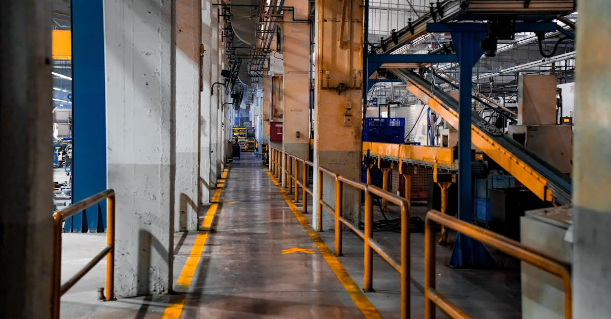

Le Rebond Inattendu de l'Acier : Un Signal Fort pour l'Économie
Dans le monde complexe et interconnecté des matières premières, certains signaux, bien que lointains, peuvent résonner avec une force surprenante à travers les marchés. C'est précisément le cas du récent rapport de Steel Dynamics Inc. (SDI), un géant de l'acier, qui a non seulement dépassé les estimations des analystes pour son chiffre d'affaires du premier trimestre, mais a également enregistré sa plus forte croissance en près de quatre ans. Cette performance remarquable n'est pas anecdotique ; elle est le reflet d'une dynamique économique sous-jacente qui mérite toute notre attention, particulièrement pour ceux qui s'intéressent aux métaux précieux.
👉 À lire : Immobilier US : L'Iran sème le doute sur les résultats
Avec des expéditions d'acier atteignant un record de 3,6 millions de tonnes et une remontée significative des prix de l'acier, SDI a orchestré un rebond de ses profits qui défie les attentes dans un contexte économique global parfois incertain. Cette nouvelle, relayée par Bloomberg Markets, interpelle : est-ce un simple sursaut passager ou le signe avant-coureur d'une vigueur industrielle plus profonde ? Pour les investisseurs avisés, chaque battement de cœur de l'économie réelle est une donnée précieuse. La résilience affichée par l'industrie sidérurgique peut en effet servir de baromètre pour l'ensemble du secteur manufacturier et, par extension, pour la demande en diverses matières premières, y compris celles qui composent nos portefeuilles de métaux précieux.
👉 À lire : Moyen-Orient: Les Marchés Voient une Issue, l'IA Face aux Nouveaux Défis de l'Or
Comprendre les rouages de cette reprise de l'acier, c'est commencer à décrypter les mouvements futurs de l'or, de l'argent et des platinoïdes. L'interdépendance des marchés est telle qu'une performance sectorielle aussi robuste que celle de SDI ne peut être ignorée. Elle suggère une confiance accrue dans la chaîne d'approvisionnement et une demande finale qui, après des périodes de turbulence, semble retrouver un élan certain. Les investisseurs en quête d'opportunités, notamment via des stratégies basées sur l'intelligence artificielle, doivent intégrer ces informations cruciales pour affiner leurs prévisions et leurs décisions de trading.

Les Moteurs de la Croissance : Prix et Demande Industrielle
Pour saisir pleinement la portée des résultats de Steel Dynamics, il est essentiel de se pencher sur les facteurs qui ont propulsé cette croissance spectaculaire. Le premier moteur, et non des moindres, réside dans la remontée des prix de l'acier. Après des fluctuations significatives, une stabilisation, voire une augmentation, des prix indique une rééquilibration favorable entre l'offre et la demande. Cette tendance est souvent le signe d'une demande soutenue de la part de secteurs clés comme la construction, l'automobile et les infrastructures, qui sont de grands consommateurs d'acier.
Le second facteur, tout aussi crucial, est le volume record d'expéditions. Avec 3,6 millions de tonnes d'acier livrées, SDI a démontré une capacité opérationnelle et logistique exceptionnelle, répondant à une demande palpable sur le marché. Cela suggère que les projets d'infrastructure, qu'ils soient publics ou privés, reprennent de la vigueur, et que les chaînes d'approvisionnement industrielles s'ajustent pour répondre à des besoins croissants. L'acier, souvent perçu comme le « sang » de l'industrie moderne, circule à nouveau avec une vigueur renouvelée, irriguant de nombreux secteurs et signalant une activité économique robuste.
« L'acier n'est pas seulement un matériau ; c'est un indicateur économique puissant. Sa performance reflète la santé sous-jacente de l'industrie mondiale et peut préfigurer des tendances pour l'ensemble du complexe des matières premières. »
Cette dynamique positive dans l'acier a des répercussions bien au-delà des fonderies. Elle peut influencer les cours d'autres métaux industriels, mais aussi, de manière plus subtile, les métaux précieux. Une économie mondiale en pleine effervescence, où les usines tournent à plein régime et les projets de construction abondent, crée un environnement propice à l'inflation et à l'augmentation des coûts de production. Ces éléments sont des catalyseurs potentiels pour l'or et l'argent, qui sont souvent considérés comme des valeurs refuges ou des couvertures contre l'inflation. L'analyse de ces interconnexions complexes est la clé pour tout investisseur cherchant à optimiser ses stratégies de trading.
Des Métaux Industriels aux Métaux Précieux : Une Interconnexion Sous-estimée
L'excellente performance de l'acier ne se limite pas à son propre marché ; elle envoie des ondes significatives à travers l'ensemble du spectre des matières premières, y compris les métaux précieux. Il existe une interconnexion souvent sous-estimée entre la vitalité des métaux industriels et le comportement des métaux précieux comme l'argent, le platine, le palladium et même l'or. Prenons l'argent, par exemple. Bien qu'il soit un métal précieux, l'argent est également un métal industriel essentiel, utilisé dans l'électronique, les panneaux solaires et diverses applications technologiques. Une demande accrue pour l'acier, signalant une reprise industrielle, se traduit souvent par une demande plus forte pour l'argent, ce qui peut soutenir ou faire grimper ses prix.
De même, le platine et le palladium, bien que moins médiatisés que l'or, jouent un rôle crucial dans les catalyseurs automobiles et d'autres industries de pointe. Une production manufacturière robuste, stimulée par la même dynamique qui porte l'acier, engendre inévitablement une demande accrue pour ces métaux du groupe du platine. Leurs cours sont donc intrinsèquement liés à la santé de l'industrie mondiale. Comme le soulignait récemment Dr. Éloïse Dubois, économiste des matières premières, « les performances de l'acier sont souvent un baromètre avancé pour l'ensemble du complexe des métaux, y compris ceux que nous chérissons pour leur valeur intrinsèque, mais qui possèdent aussi une facette industrielle prononcée. »
Quant à l'or, le lien est plus indirect, mais tout aussi pertinent. Une activité industrielle forte peut générer des pressions inflationnistes. Lorsque les coûts de production augmentent et que la demande est soutenue, les prix à la consommation peuvent suivre, érodant le pouvoir d'achat des monnaies fiduciaires. Dans ce scénario, l'or retrouve son rôle historique de valeur refuge et de protection contre l'inflation. Les investisseurs se tournent vers l'or pour préserver leur capital, créant ainsi une demande qui peut faire monter son prix. De plus, une économie robuste peut aussi signifier un sentiment de marché plus optimiste, ce qui peut entraîner des flux de capitaux plus importants vers les actifs de croissance, mais aussi vers des actifs diversifiés, y compris les métaux précieux, pour équilibrer les portefeuilles. Comprendre ces nuances est essentiel pour quiconque souhaite naviguer avec succès sur les marchés des métaux précieux.

L'IA au Cœur de l'Analyse : Déchiffrer les Signaux pour l'Or et l'Argent
Face à cette toile complexe d'interdépendances, où la performance d'un secteur comme l'acier peut avoir des répercussions en cascade sur les métaux précieux, comment un investisseur peut-il s'y retrouver ? C'est là que l'intelligence artificielle déploie tout son potentiel. Un agent IA spécialisé dans le trading des matières premières ne se contente pas de réagir aux nouvelles ; il les analyse en profondeur, les corrèle avec des milliers d'autres points de données et identifie des modèles que l'œil humain ne saurait percevoir.
Imaginez un système capable de digérer instantanément le rapport de Steel Dynamics, de le comparer aux données historiques sur les prix de l'acier, les volumes d'expédition, les indices manufacturiers mondiaux, les taux d'inflation, les politiques monétaires, et même les sentiments de marché exprimés sur les réseaux sociaux ou dans les publications financières. L'IA excelle à transformer ce déluge d'informations en signaux de trading actionnables. Elle peut par exemple détecter une corrélation émergente entre une augmentation des commandes d'acier et une hausse future de la demande industrielle pour l'argent ou le platine, bien avant que ces tendances ne soient évidentes pour le marché général.
De plus, l'IA ne se fatigue jamais. Elle opère 24 heures sur 24, 7 jours sur 7, scannant en permanence les marchés mondiaux pour identifier les opportunités. Elle peut ajuster les stratégies de trading en temps réel, s'adaptant aux moindres changements dans les dynamiques de l'offre et de la demande, aux nouvelles géopolitiques ou aux mouvements de devises qui influencent les prix des métaux précieux. Cette capacité de traitement et d'adaptation est un avantage concurrentiel majeur pour les traders. Elle permet non seulement de déchiffrer les signaux complexes émanant de secteurs comme l'acier, mais aussi de les transformer en décisions d'achat ou de vente optimisées pour l'or, l'argent et les autres métaux précieux.
L'utilisation d'un tel agent IA ne garantit pas la perfection, mais elle augmente considérablement la probabilité de prendre des décisions éclairées, basées sur une analyse de données exhaustive et objective, réduisant ainsi l'impact des émotions humaines et des biais cognitifs dans le trading. C'est une révolution pour quiconque cherche à maximiser son potentiel sur les marchés des métaux précieux.
Conclusion
Le rebond impressionnant de Steel Dynamics est bien plus qu'une simple victoire trimestrielle pour une entreprise sidérurgique ; c'est un puissant indicateur des dynamiques économiques sous-jacentes qui peuvent potentiellement remodeler le paysage des matières premières. La vigueur retrouvée de l'acier, portée par des prix en hausse et des volumes d'expéditions records, signale une reprise industrielle qui ne peut être ignorée par les investisseurs.
Cette performance a des implications directes et indirectes pour les métaux précieux. Tandis que l'argent, le platine et le palladium peuvent bénéficier directement de l'augmentation de la demande industrielle, l'or se positionne comme une couverture essentielle contre les pressions inflationnistes que cette croissance pourrait engendrer. Dans ce contexte de marché en constante évolution, la capacité à analyser rapidement et précisément ces interconnexions devient un atout inestimable.
C'est précisément là que l'intelligence artificielle se révèle être un outil indispensable. En traitant et en corrélant des volumes massifs de données – des rapports d'entreprise aux indicateurs macroéconomiques, en passant par les sentiments de marché – un agent IA peut identifier des opportunités de trading dans l'or et les métaux précieux qui seraient invisibles ou trop lentes à percevoir pour un humain. L'ère du trading intuitif cède la place à celle de l'analyse augmentée par l'IA, offrant aux investisseurs la possibilité de naviguer les complexités du marché avec une précision et une réactivité sans précédent. Les investisseurs avisés chercheront désormais à intégrer ces technologies pour transformer les signaux économiques en succès financiers.